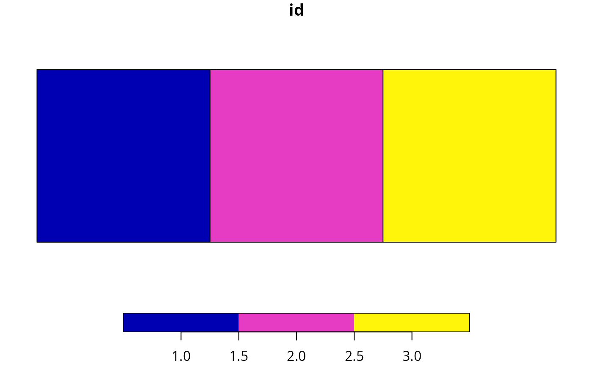

Convert Marxan boundary data to matrix format
Source:R/marxan_boundary_data_to_matrix.R
marxan_boundary_data_to_matrix.RdConvert a data.frame object containing Marxan boundary data
to matrix format. This function is designed specifically for
boundary data (not connectivity data).
It ensures that the output matrix correctly specifies
symmetric spatial relationships between planning units.
Arguments
- x
problem()object that contains planning unit and zone data to ensure that the argument todatais converted correctly. This argument can be set toNULLif checks are not required (not recommended).- data
data.frameobject with the columns"id1","id2", and"boundary".
Value
A Matrix::dgCMatrix sparse matrix object.
Notes
In earlier versions, the function could convert boundary data that pertain to multiple zones. This is no longer possible, following updates to streamline the package.
Examples
# create example planning unit layer
pu_data <-
matrix(1:3, nrow = 1) %>%
terra::rast() %>%
setNames("id") %>%
terra::as.polygons() %>%
sf::st_as_sf()
# plot planning units
plot(pu_data)

# manually create Marxan boundary data for these planning units following
# the Marxan boundary data format specification
bldf <- data.frame(
id1 = c(1, 2, 3, 1, 2),
id2 =c(1, 2, 3, 2, 3),
boundary = c(3, 2, 3, 1, 1)
)
# print data
print(bldf)
#> id1 id2 boundary
#> 1 1 1 3
#> 2 2 2 2
#> 3 3 3 3
#> 4 1 2 1
#> 5 2 3 1
# convert to boundary matrix format for use in prioritizr
m1 <- marxan_boundary_data_to_matrix(NULL, bldf)
# print converted matrix
## we can see that the values in bldf and m1 are different,
## this is because Marxan and prioritizr use different formats
## for storing boundary information
print(m1)
#> 3 x 3 sparse Matrix of class "dsCMatrix"
#>
#> [1,] 4 1 .
#> [2,] 1 4 1
#> [3,] . 1 4
# automatically create boundary data for use in prioritizr,
# by using the boundary_matrix() function
m2 <- boundary_matrix(pu_data)
# print matrix
## we can see that the values in m1 and m2 are exactly the same,
## this is because marxan_boundary_data_to_matrix() automatically
## converts Marxan data to the same format as boundary_matrix()
print(m2)
#> 3 x 3 sparse Matrix of class "dsCMatrix"
#>
#> [1,] 4 1 .
#> [2,] 1 4 1
#> [3,] . 1 4